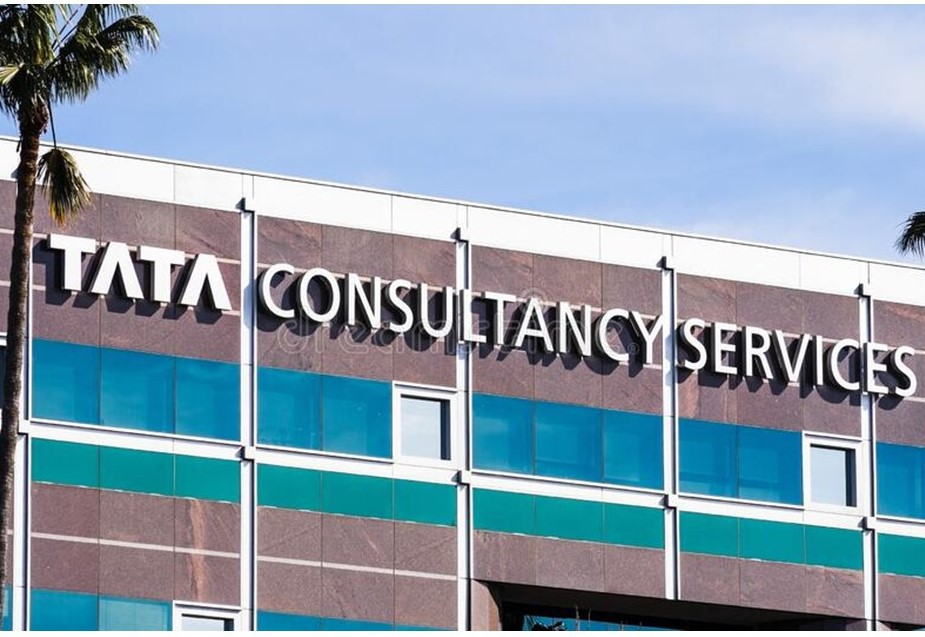
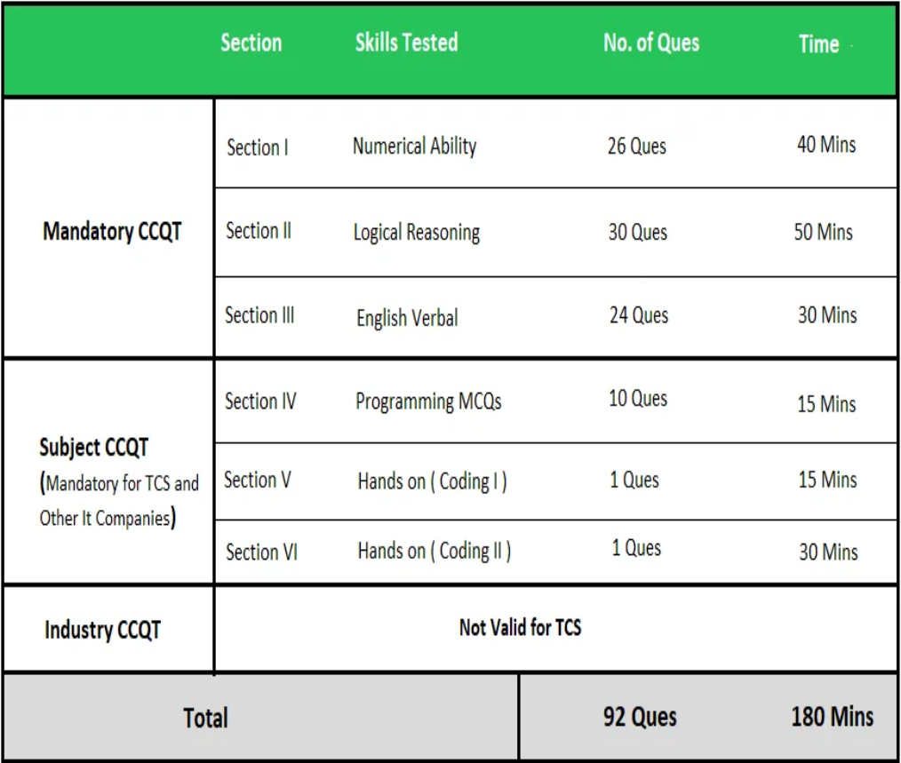

|  |
Info:
Tata Consultancy Services (TCS) is an Indian multinational information technology (IT)
services and consulting company headquartered in Mumbai.It is a part of the Tata
Group and operates in 149 locations across 46 countries.
TCS is the second largest Indian company by market capitalisation and is among
the most valuable IT services brands worldwide.In 2015, TCS was ranked 64th overall in the
Forbes World's Most Innovative Companies ranking, making it both the highest-ranked IT services
company and
the top Indian company.As of 2018, it is ranked eleventh on the Fortune India 500 list.
In April
2018, TCS became the first Indian IT company to reach $100 billion in market capitalisation[14]
and second
Indian company ever (after Reliance Industries achieved it in 2007) after its market
capitalisation
stood at ₹6.793 trillion (equivalent to ₹7.7 trillion or US$100 billion in 2020) on
the Bombay Stock Exchange.
In 2016-2017, parent company Tata Sons owned 72.05% of TCS and more than 70% of Tata Sons'
dividends
were generated by TCS.In March 2018, Tata Sons sold stocks of TCS worth $1.25 billion in a bulk
deal.As of 15 September 2021, TCS has recorded a market capitalisation of US$200 billion, making
it the
first Indian IT firm to do so.
| Founded : |
1968; 54 years ago |
| Founder : |
Tata Sons |
| Type : |
Service Based |
| Key people : |
Natarajan Chandrasekaran
(Chairman)
Rajesh Gopinathan
(MD & CEO) |
|
Hiring Process:
TCS hires mainly for two job profiles:
- TCS Ninja (3.3-3.56LPA)
- TCS Digital (6.5-7LPA,7+Mech)
The tests conducted for hiring :
- NQT(National Qualifier Test)
- CodeVita
1.NQT(National Qualifier Test)
About TCS National Qualifier Test:
- NQT (Cognitive Skills) is a prerequisite for all the tests.
- The validity of the NQT score is of two years.
- Candidates are eligible to apply on the TCS iON Job Listing Portal with an NQT score.
- NQT exams are conducted in both online and offline modes.
Eligibility Criteria:
- Students with UG, PG, and Diploma and are currently in their pre-final, final year or have passed
out.
- Students with any degree of specialization are eligible to sit for TCS NQT.
- Freshers having less than 2 years of experience are eligible.
Application Process:
- Go to the “TCS National Qualifier Test (TCS NQT)” page and click on the “Register Now” button.
- Click on the login button if you have already registered.
- Now Enter your TCS iON Digital Learning Hub credentials. Or Sign up if you are a new user by hitting
on
“Create Account”.
- Now, fill in all the required details correctly.
- Click on the SUBMIT button to complete the Registration.
- After successful registration, you will get the confirmation message on your mail id and mobile
number.
Online Test Pattern:

Round 2:
- If you have cleared the Online test then TCS will contact you for further rounds will include:
- Technical Round: In this round, basic coding questions are asked. Some questions
on
computer science
subjects such as DBMS, OS, OOPS can also be asked. Also, you can prepare for language-specific
questions
that you have mentioned in the resume.
- Managerial Round: This round can have both technical or HR-based questions
regarding
past internships
experience, resume projects, teamwork, etc.
- HR Round: This is a normal HR round and contains behavioral questions and they
discuss
with you the
compensation.
2.CodeVita
TCS CodeVita, the largest global computer programming competition, is a 24-hour online programming
contest where a participant can log in from anywhere, any time. Coding enthusiasts can sharpen their
programming skills through a series of intriguing real-life challenges across a stretch of 3 Rounds and
an
opportunity to win the coveted "World's Best Coder" title along with prize money of $10,000.
Exam Pattern
-
Round 1(Pre-Qualifier):
It is an online coding contest in which participants need to solve
six coding questions in a time span of 6 hours. You can expect an interview
call if you have solved at least one question. But better to solve 2-3 to be assured
and don't try to copy codes as the contest has a very strong plagiarism checker.
You will then be selected for the role of TCS ninja or TCS digital as per your
performance in the interview.
-
Round 2(Qualifier)
The top performers of the zonal round will be promoted to this round,
and it's an online round too. You need to solve eight coding questions
in a time span of 8 hours. The difficulty level is merely high,
so one needs to be well prepared before making an attempt.
-
Grand Finale
It is the final round which consists of 10 coding questions, and top performers
from the qualifier round will advance to the final round. It is generally held in
TCS offices in India. The top three performers will be declared winners and will receive
a cash prize, a total of USD 20,000. To learn more details about the Codevita, you can visit the
TCS
Codevita website.
Interview Experience